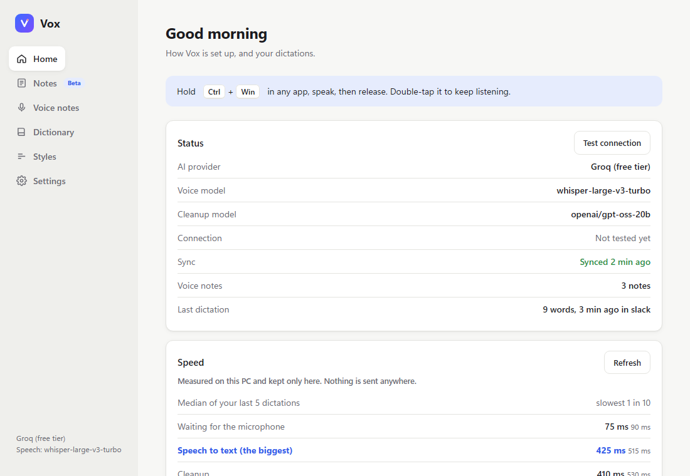

Push-to-talk dictation for Windows and Android
Hold a shortcut (Windows) or tap a bubble (Android), speak, and cleaned-up text is typed into the focused app. Speech and cleanup run on any OpenAI-compatible endpoint you choose (Groq free tier, OpenAI, Ollama, your own server) with your own key. No Vox server, account or telemetry.
WindowsVoxSetup.exe, per-user, unsigned AndroidVox.apk, sideloadedBoth show an OS warning on first install (unsigned installer, non-Play APK): install steps. Needs a provider key (Groq is free) or your own server.

Status. 2.0 is built and tested by CI. Android features, keep listening, learn-from-corrections and code mode have not run on real hardware yet. Open checks: device-test issues; known issues.
Features
Cleanup that keeps your words
Punctuation, case and spelling only. A fidelity guard compares the output with the transcript and falls back to your own words, only lightly tidied, on word loss.
Any provider
Separate speech and cleanup endpoints and keys: Groq, OpenAI, OpenRouter, Together, Mistral, Ollama, LM Studio, Speaches or a custom URL.
Lists, snippets, code mode
Spoken lists become bullets or numbers. Snippets expand after cleanup. Windows code mode types userName, (, ==.
Learns from corrections
Fix a word in the text Vox typed (3 min) and it enters your dictionary. Changed words only; undo in Dictionary.
Keep listening and notes
Double-tap to record up to 60 min as one note. Voice notes on both apps; Android note bubble and tile.
Optional relay
Self-hosted sync of notes and profile, and an AI-key proxy. One Python file or standalone Windows/Linux/arm64 binaries.
Screenshots
Rendered from the apps' own pages with sample data.


Privacy
Audio goes to your speech server; transcript, dictionary and app name (never the window title) to your cleanup server; the relay gets data only if enabled. Learn-from-corrections reads the focused field for 3 minutes after typing (never password fields) and keeps only changed words; switch it off in Settings, Privacy. Windows keys use DPAPI; Android keys are unencrypted in app storage. This page loads nothing from other sites. Full policy.
Links
README · Docs · Changelog · Release notes · Roadmap · Relay · Contributing · Security
MIT. Original author Muhammad Minhajuddin; v2 by Yuvi-5; number-format tests by GreedyC.